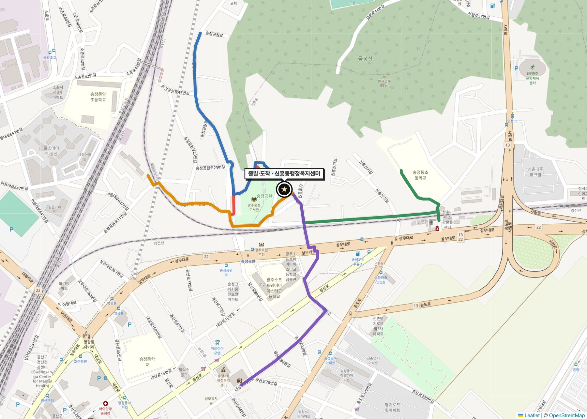
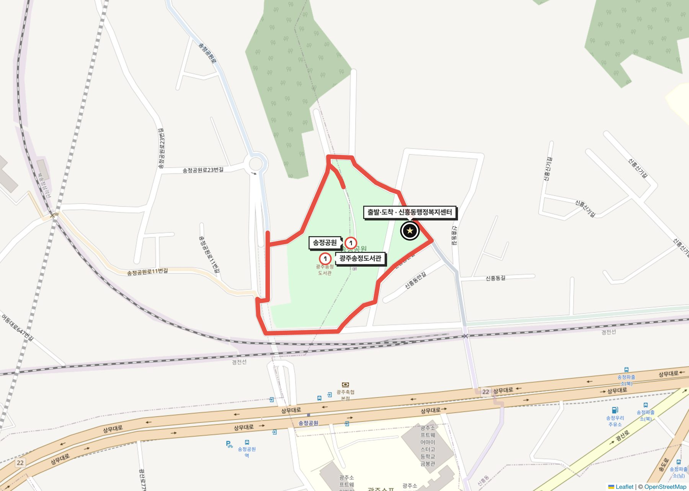
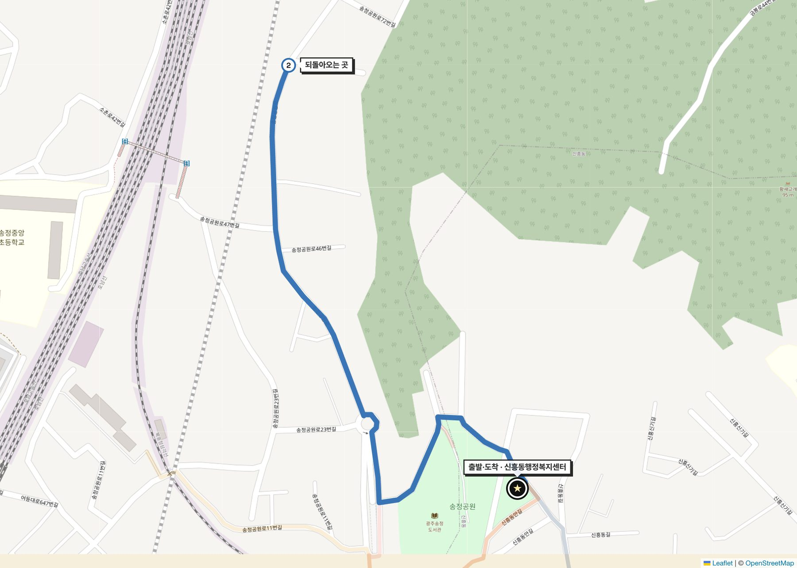
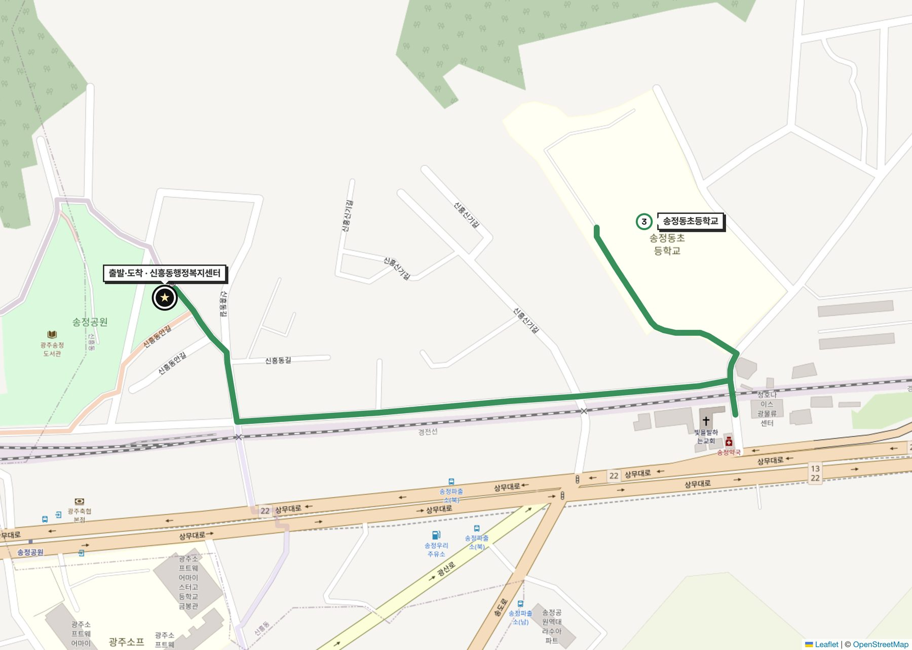
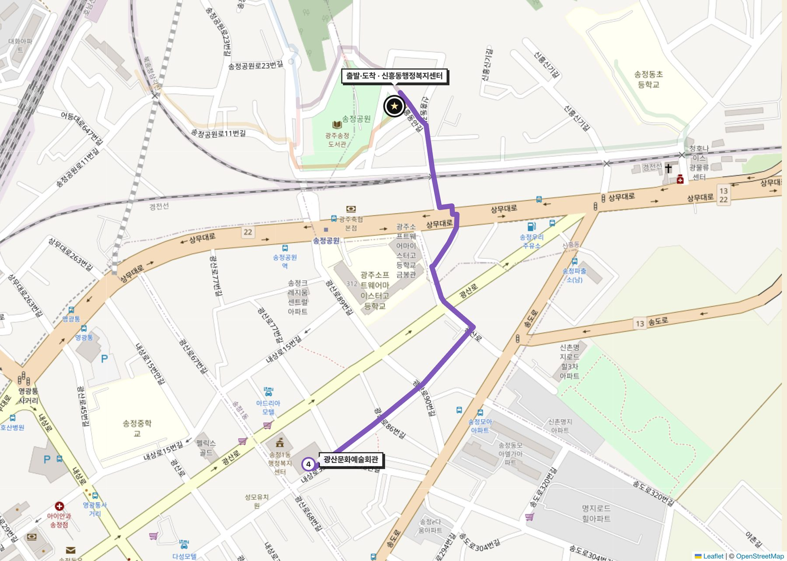
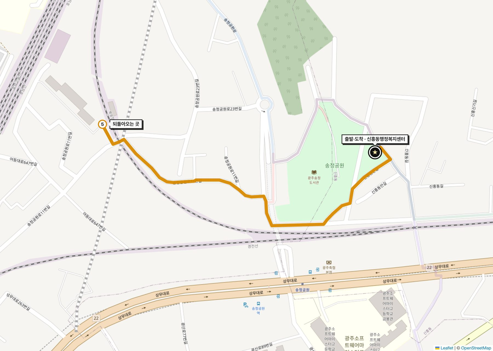

우리 동네 기록 노트 · 4차시 동네 산책
테이블 번호 = 길 번호. ★ 출발·도착. 40분 안에 돌아와요(걷는 시간 + 멈춰서 기록하는 시간). 걷는 시간은 시속 2.5km(천천히)로 셈했어요.
| 길 | 왕복 | 걷기 | 특징 |
|---|---|---|---|
| 1 송정공원 한 바퀴 | 0.6km | 15분 | 평지 · 가장 짧아요 |
| 2 금봉산 아랫길 | 1.4km | 35분 | 오르막 조금 |
| 3 송정동초 담장길 | 1.4km | 35분 | 평지 |
| 4 상무대로 건너 옛 송정 | 1.5km | 35분 | 큰길 한 번 건너요 |
| 5 철길 옆 골목 | 1.1km | 25분 | 평지 · 좁은 길 |
수업 전에 꼭 한 번 걸어 보세요. 길은 지도 자료로 그린 초안이라, 공사·막힌 길·건널목 위치를 답사로 확인하고 고쳐 주세요.
비상 연락: ______________________ 돌아올 시각: ____ 시 ____ 분
지도 © OpenStreetMap 기여자

ROUTE 01 · 1번 테이블
왕복 0.6km걷기 약 15분평지 · 가장 짧아요
? 이 의자는 누가 제일 많이 앉을까? 도서관엔 언제 사람이 많을까?

ROUTE 02 · 2번 테이블
왕복 1.4km걷기 약 35분오르막 조금
? 이 산은 왜 금봉산일까? 언덕 위 집들은 언제부터 있었을까?

ROUTE 03 · 3번 테이블
왕복 1.4km걷기 약 35분평지
? 학교 담장 그림은 누가 그렸을까? 이 길 이름은 왜 신흥동길일까?

ROUTE 04 · 4번 테이블
왕복 1.5km걷기 약 35분큰길 한 번 건너요
? 이 골목 가게 중 제일 오래된 곳은 어디일까? 예전엔 여기에 뭐가 있었을까?

ROUTE 05 · 5번 테이블
왕복 1.1km걷기 약 25분평지 · 좁은 길
? 철길 옆 집들은 언제 생겼을까? 이 길로 누가 제일 많이 다닐까?